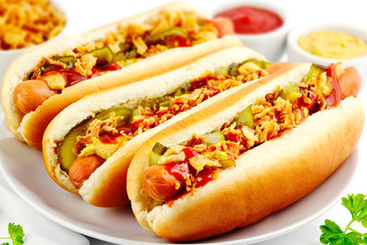

CACHORRO QUENTE
PREPARO 30 MIN
RENDIMENTO 8 PORÇÕES
INGREDIENTES
- 8 pães de cachorro quente ou francês
- 8 salsichas
- 1 lata de massa de tomate
- 8 fatias de queijo mussarela
- 4 colheres (sopa) de milho verde
- 4 colheres (sopa) de ervilha
- 1 colher (sopa) de manteiga
- 1 colher (sopa) rasa de suco de limão puro
- batata palha a gosto
- 1/2 tablete de caldo de carne, calabresa ou o sabor que preferir
- 1 cebola pequena picada
- sal a gosto
- orégano a gosto
- salsa a gosto
- 100 ml de água ou o suficiente para molho
- maionese a gosto
- ketchup a gosto
- mostarda a gosto
- papel toalha
MODO DE PREPARO
- Ferva a salsicha por 10 minutos, depois em uma panela derreta a manteiga, frite a cebola e ligeiramente a salsicha cozida
- Acrescente a massa de tomate, a água, o suco de limão, o tablete de caldo de carne, o milho, a ervilha, o orégano, a salsa e o sal, mexa e deixe engrossar o molho
- Em seguida, corte o pão ao meio e coloque no papel toalha, depois passe no pão a maionese e coloque uma fatia de queijo mussarela, a salsicha, o molho, a batata palha, ketchup e mostarda